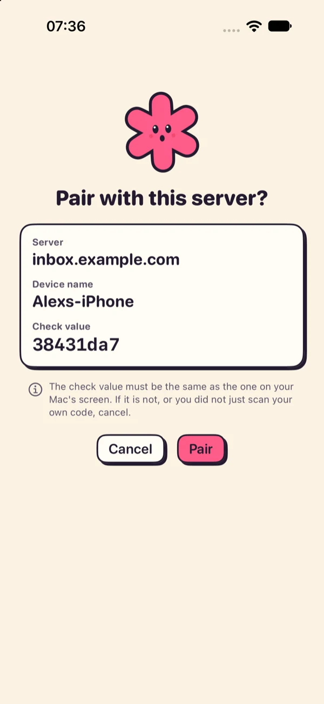
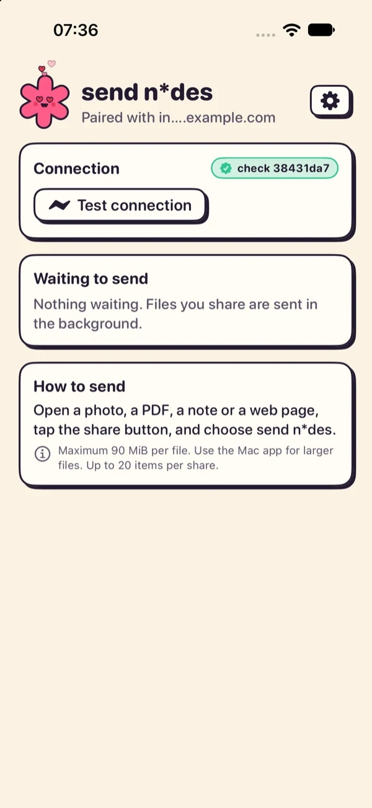
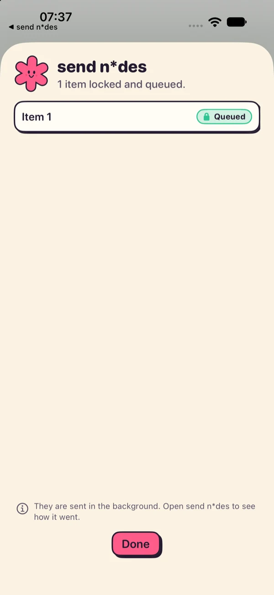

Get it running.
Build the apps, make a vault, run the inbox server and connect your devices. Start with the part you need; each one works without the next.
- Just a vaultAn encrypted folder you open on your Mac. No server, no network.Start at "Make a vault" →
- Add an inboxA server your devices send files to, even while the vault is locked.Start at "Run the server" →
- Add the iPhoneShare a photo, PDF or link from any app straight to your inbox.Start at "The iPhone app" →
How the pieces fit#
Your devices lock each file before it leaves them. The server only holds locked files until your Mac collects them.
- Mac or iPhoneLocks the file with the vault's public key, then uploads it.
- Inbox serverStores locked files (
ndesd). Holds no key that can open them. - Your vaultA folder of encrypted files. Only your Mac, with your passphrase, can read it.
The vault is just a folder, so it can live on this Mac, a NAS, Google Drive or Dropbox. Whoever hosts or syncs it sees only ciphertext. The inbox server is optional: you need it only if you want devices to send files without the vault being unlocked.
What you need#
| Part | Needs |
|---|---|
Mac app and ndes CLI | A Mac with Apple silicon on macOS 14 or later. Go 1.27.3 or newer, and the Swift toolchain (install Xcode or the Command Line Tools). |
| Inbox server | Any machine that stays on: Docker with Compose, or a Linux box (amd64 or arm64) to run the binary. |
| iPhone app | Xcode, XcodeGen, an iPhone on iOS 17 or later, and a paid Apple Developer account. The app uses an App Group and a shared Keychain group, which free accounts can't register. |
| An address for the server | The Mac app can reach http:// on Tailscale or loopback. The iPhone app only accepts https:// and a real DNS name (no IP address, no plain http), so put HTTPS in front of the server if the phone will use it. |
You build and install it yourself with your own signing team. That's covered in The iPhone app.
Build the apps#
One clone gives you the Mac app, the CLI and the server.
$ git clone https://github.com/klppl/sendndes && cd sendndes
$ go build -o ndes ./cmd/ndes # the command-line tool
$ scripts/build-app.sh # the Mac app, at build/sendndes.appOpen build/sendndes.app (drag it to Applications if you like).
The default build is ad-hoc signed, so its signature changes every build and macOS may ask again for Keychain access. To keep it stable, build with your own certificate:
SIGN_IDENTITY="Apple Development: Your Name (TEAMID)" scripts/build-app.sh
Make a vault#
A vault is a folder. Choose where it lives; everyone who stores or syncs it sees only ciphertext.
-
Create it
In the Mac app choose Create a vault, pick a folder and set a passphrase of at least 12 characters. Or use the CLI, which asks for the passphrase:
$ ./ndes init ~/MyVault # prints the recovery key $ export NDES_VAULT=~/MyVault # or pass --vault after a command -
Write down the recovery key
It is shown once. The app makes you confirm three random groups of it before you can continue.
There is no resetIf you lose both the passphrase and the recovery key, the data is gone. Nobody can recover it for you, including this project.
-
Try it
$ ./ndes add photo.jpg $ ./ndes ls $ ./ndes get <id> -o photo.jpgIn the Mac app, drop files in, press Space for Quick Look, and export when you need a decrypted copy.
With Google Drive "stream" or Dropbox online-only folders, listing the vault opens every file, which can make the sync client download them. Mark the vault folder as available offline.
That's a complete setup if you only want a private vault on your Mac. Keep reading to add an inbox.
Run the server#
ndesd is the inbox. It starts with a web page that walks you through setup, so there are no config files to write.
Docker (easiest)#
On the machine that will receive files, from the cloned repo:
$ docker compose up -d
$ docker compose logs ndesd # shows your one-time setup codeThen open http://127.0.0.1:8080 on that machine. From another computer, use an SSH tunnel: ssh -L 8080:127.0.0.1:8080 your-server.
A prebuilt image#
To skip building on the server, run the repo's Docker image workflow from the Actions tab. It publishes ghcr.io/<you>/sendndes. If the package is private, make it public or run docker login ghcr.io on the server. Then use this docker-compose.yml:
services:
ndesd:
image: ghcr.io/<you>/sendndes:latest
restart: unless-stopped
volumes:
- ndesd-data:/data
ports:
- "127.0.0.1:8080:8080"
- "8485:8485"
volumes:
ndesd-data:A Linux binary#
$ scripts/build-linux.sh # dist/ndesd-linux-amd64, -arm64, SHA256SUMS
$ sudo install -m 0755 dist/ndesd-linux-amd64 /usr/local/bin/ndesd
$ ndesd --data /var/lib/ndesdFor a hardened systemd unit and a dedicated user, follow the deploy notes.
Ports and who can reach them#
| Port | What it is | Keep it |
|---|---|---|
8080 | The admin web page, for you only. | On this machine. It answers only loopback, private-network and Tailscale addresses, and needs a password. Reach it over an SSH tunnel or Tailscale. |
8485 | The sync port your devices connect to. | On Tailscale or a VPN, or behind HTTPS. It speaks plain HTTP itself. |
Files are locked on the device, but the upload token travels in a header. Put the sync port behind HTTPS (tailscale serve, Caddy or a Cloudflare Tunnel) or keep it on Tailscale. The iPhone needs HTTPS anyway.
Using a Cloudflare Tunnel? Read the Cloudflare notes first. Bot protection can block the app, and the admin page needs its own Access policy and NDESD_ADMIN_BEHIND_PROXY=1.
First-time server setup#
The admin page asks three things, once.
-
Claim the server
Enter the one-time setup code from the logs and choose an admin password. The code is also saved as
setup-codein the data folder. -
Choose how devices reach it
Tailscale, a proxy on the machine, the local network, or every interface. If a proxy or tunnel sits in front, set Address your devices use to the public address, like
https://vault.example.com, so the page shows that instead of a host and port.
Step 2: how devices reach the server. -
Connect your devices
The page now shows status, what's waiting and the Devices card. You add devices there, in the next two sections.
The server never holds a key that can open anything. Devices learn the vault's public inbox key while pairing.
Connect the Mac app#
No tokens to copy. You compare a six-digit code on two screens and approve.
-
Open the pairing window
On the server's page, press Add a device under Devices. The window stays open for ten minutes and closes by itself. Nothing can connect while it's closed.
-
Connect from the app
In the Mac app go to Settings → Server, type the server address and press Connect. The app shows a code like
742 913.
Enter the address and press Connect. -
Approve it on the server
The same code appears on the server page next to the Mac's name. If it matches, press Approve. The Mac now has its own access, kept in its Keychain.
Sending now works while the vault is locked.
The iPhone app#
Send-only. The phone has an upload-only key: it can send files, but it can't read or delete anything.
Build and install#
-
Set your signing team
Find your 10-character Team ID at developer.apple.com → Account → Membership details. Then:
$ brew install xcodegen $ cp ios/Local.xcconfig.example ios/Local.xcconfig $ open -e ios/Local.xcconfig # set DEVELOPMENT_TEAM to your Team ID $ cd ios && xcodegen && open SendndesIOS.xcodeprojLocal.xcconfigis git-ignored, so your Team ID stays out of the repo. -
Use your own bundle IDs (only if you aren't the project's owner)
The project uses the prefix
se.klippel.sendndesfor its app IDs, App Group and Keychain group, and Apple allows each ID on one team only. Replace that prefix everywhere underios/(inproject.yml,App/SendndesApp.swiftandShareExtension/ShareViewController.swift), then runxcodegenagain. -
Prepare the phone
Connect it by cable, unlock it and tap Trust This Computer. Turn on Developer Mode in Settings → Privacy & Security (the phone restarts).
-
Run it
In Xcode pick the Sendndes scheme and your iPhone, then press ⌘R. The first build registers the app IDs and the App Group under your team. If iOS says "Untrusted Developer", open Settings → General → VPN & Device Management and trust your certificate.
Pair it with your Mac#
The phone pairs by scanning a QR code your Mac shows, so the server's address and keys never get typed.
-
Show the code on the Mac
Mac app → Settings → Devices. Name the device, check the server's
https://address, and press Show QR code. The server's pairing window opens by itself. -
Scan it with the phone
Open send n*des, tap Scan the QR code from your Mac and allow the camera. The phone shows the server, a device name and a check value.
-
Compare, then pair
The check value must be the same as the one on your Mac's screen. If it isn't, press Cancel. Otherwise press Pair.
-
Approve the code
The phone shows a six-digit code, and your Mac's QR window shows the same one. Press Approve there (or on the server's Devices page). Then tap Test connection on the phone: it should say the server accepts this phone's token.



Send something#
Open a photo, PDF, note or web page, tap the share button and choose send n*des. The file is locked on the phone and queued; the system uploads it in the background, even while the phone is locked.
- Up to 20 items per share and 90 MiB per file. Use the Mac app for larger files.
- Open the app to see what's waiting, what failed (with Retry and Discard) and a history. Failed items are kept for 7 days.
- "Stored on server" means the server has the locked file. It doesn't mean your Mac has opened it yet.
Getting files into the vault#
Files wait on the server until your Mac collects them. Your Mac needs the passphrase for that; the server doesn't.
- Mac app: unlocking checks the inbox and brings new files in by itself (you can turn that off in Settings). Press ⇧⌘I to check at any time. New files carry a new tag.
- Command line:
ndes pull --server <url> --token-file <file>pulls and ingests sealed files. Use it for scripts and servers without the Mac app.
Command line#
Everything the app does, plus verify, recover and change the passphrase.
| Command | What it does |
|---|---|
ndes init <vault-dir> | Create a vault and print the recovery key. |
ndes add <file> | Encrypt a file into the vault. --dir and --name choose where and what. |
ndes ls | List files. --dir picks a folder. |
ndes get <id-or-path> -o <out> | Decrypt a file. |
ndes pull --server <url> --token-file <f> | Pull sealed files from a server and ingest them. |
ndes ingest | Move sealed files from an inbox folder into the vault. |
ndes verify | Read and authenticate every file in the vault. |
ndes passwd | Change the passphrase. The vault key and recovery key stay the same. |
ndes recovery-key | Print the recovery key (needs the passphrase). |
ndes recover <vault-dir> | Rebuild vault.json from the recovery key. |
ndes sender-config | Make a phone pairing payload and the matching server line. |
Common flags: --vault <dir> (default $NDES_VAULT, then .) and --passphrase-stdin. Run ndes --help for the rest.
Devices, upgrades, backups#
Remove a device#
On the server page choose Devices → Remove, or in the Mac app go to Settings → Devices. The device stops working at once. This is what actually cuts off a lost phone: the phone still holds its encryption key, and it's the token that stops uploads.
Start over#
After signing in, the server's Settings → Start over removes what you tick (devices, reachability settings, pasted keys, waiting files) and runs the guided setup again. Your admin password stays.
Upgrade the server#
$ git pull && docker compose up -d --build # built from source
$ docker compose pull && docker compose up -d # prebuilt imageYour settings, device tokens and waiting files live in the ndesd-data volume, so they survive an upgrade. Update the Mac app and the server together when the release notes say the format changed.
Back up#
- The vault folder. It's ciphertext, so any backup or sync service is fine.
- The recovery key and passphrase, somewhere separate from the vault.
- The server is a relay, not a store: once the Mac has pulled a file it's deleted from the inbox. Losing the server loses only files that hadn't been collected yet.
Troubleshooting#
What you'll see, why, and the fix.
| You see | Why and what to do |
|---|---|
| "The server isn't accepting new devices right now" | The ten-minute pairing window is closed. Press Add a device on the server page (or reopen the QR window on the Mac), then try again. |
| "The server address must start with https://" | The phone accepts only https:// with a real DNS name. No IP address, no plain http. Put HTTPS in front of the sync port and use that address. |
| The check values differ | Cancel and don't pair. A mismatch means the code didn't come from your Mac, and pairing it would point the phone at someone else's server or keys. Make a new code on your Mac. |
| Phone says "Connected", but files never show up in the vault | The server has them; your Mac hasn't collected them. Unlock the Mac app or press ⇧⌘I. |
| Uploads stay "failed, retry later" behind Cloudflare | Bot Fight Mode, challenges or Browser Integrity Check can block the app. Add a WAF rule that skips them for PUT /inbox/…, GET /v1/ping and /v1/pair/… (details in the Cloudflare notes). |
| An upload is refused as too large (413) | The phone's limit is 90 MiB per file. Cloudflare's free and Pro plans cap a request near 100 MB. |
| Mac: "The route to this address does not go through Tailscale" | The app insists plain-http Tailscale addresses are actually reached over Tailscale. Check that Tailscale is connected, or use an HTTPS address. |
| Xcode: "Device isn't registered in your developer account" or "No profiles for …" | Xcode is still using a free Personal Team. In Xcode → Settings → Accounts sign in with your paid account (sign out and back in if it only lists "Personal Team"), choose that team under Signing & Capabilities for both targets, and run once from Xcode. |
| Xcode: "Manual pairing of this device is already in progress" | Unlock the phone, tap Trust on its prompt, turn on Developer Mode, then unplug and replug the cable. |
| Camera won't start on the scan screen | Allow the camera under Settings → send n*des. The camera is used only to read the pairing QR code. |
Remove its device on the server page. That revokes its token immediately and is the step that matters. Then, if you like, tap Remove configuration in the app to delete the keys, address, waiting files and history from the phone.
Where to go next#
- What it protects, and what it doesn't, in plain words.
- SPEC.md: the file format and threat model, with independent Go, Swift and Python implementations that agree byte for byte.
- Server deploy notes: systemd, tokens file, limits.
- Cloudflare notes: tunnel setup and what Cloudflare can see.
- iPhone app notes: what has been tested, and what hasn't.
Found a mistake, or something unclear?